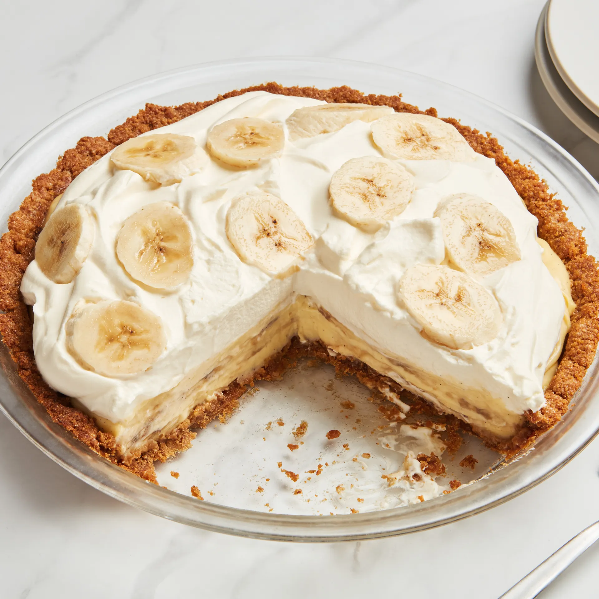
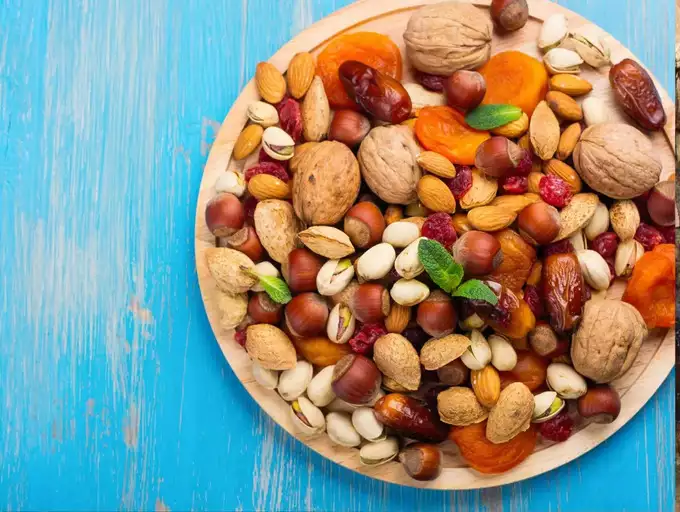
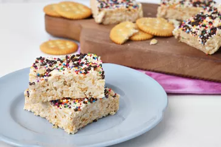
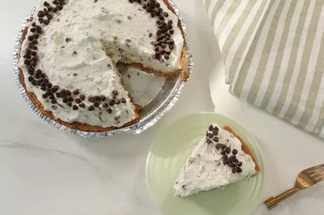
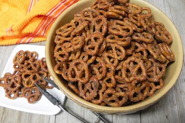
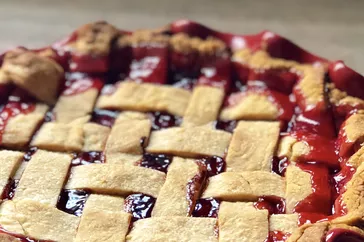
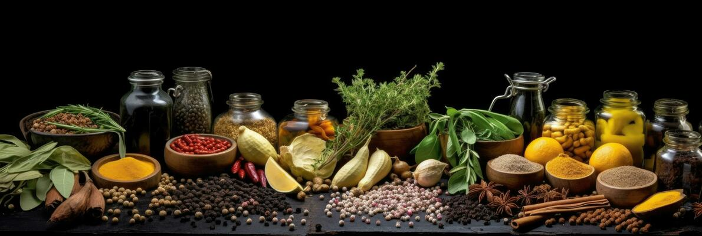

Login
Find a Recipe

Banana Cream PIE
This recipe for banana cream pie uses fresh bananas in the pie crust, the filling,
and on top of the pie. The pie crust is made with graham crackers, mashed bananas,
and melted butter. The filling is made with sliced bananas, vanilla custard,
and more mashed bananas. The pie is topped with whipped cream, but you could also top it with caramel sauce,
hot fudge, or tahini magic shell.
Read more
Read more
News and Trending
Backed by Deepinder Goyal, ChefKart simplifies the process of finding a home cook By placing professionally trained chefs at home, ChefKart wan

6 Healthy dry fruits atnd nuts that are must for winter diet
5 Homemade drinks to instantly reduce bloating
The latest

BAR COOKIE RECIPIES
Ritz Crispy Treats
7.5 Ratings

CUSTARD AND CREAM PIES
Cannoli Cream Pie
8 Ratings

SNACKS
Ranch Pretzels
5 Ratings
PASTA APPETIZER RECIPES
Baked Shotgun Shells
3 Ratings
EGGNOG RECIPES
Rich Almond Milk Eggnog
6 Rating

CHERRY PIE RECIPIES
Cherry Pie
4 Ratings

Happy New Year
From sunrise smoothies to midnight feasts, may your year be seasoned with joy, sweetened with success, and always well-fed. Happy New Year!